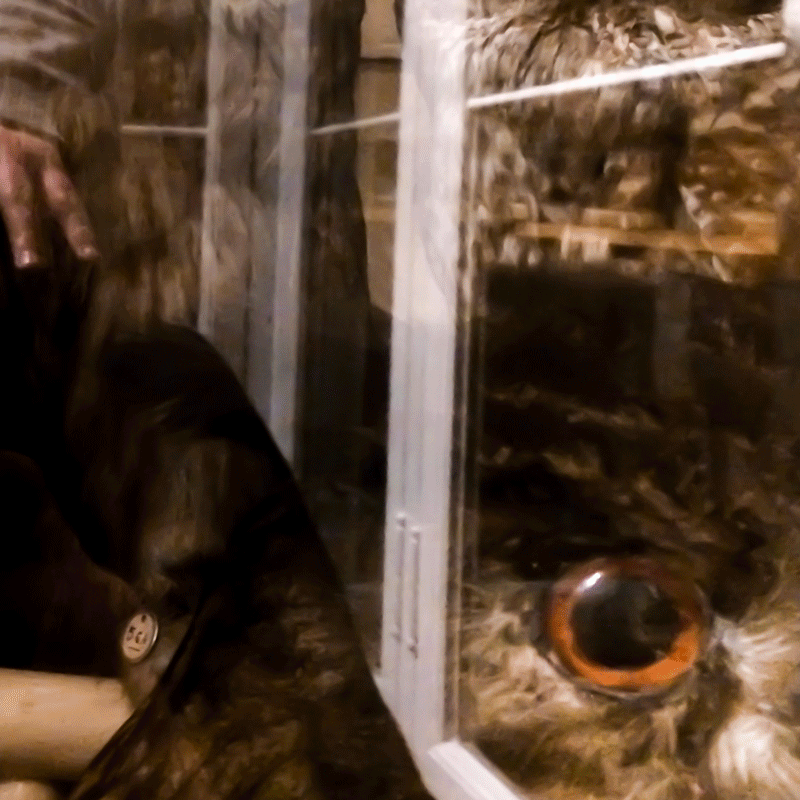

About
•
Portfolio
•
Contact
Giní Cormerais
Photography

It had been waiting between the roots, behind the wall, inside the light
A thread has been drawn in the dust
The old gods still wander where an echo sleeps beneath the leaves
Some places reveal themselves when the eyes grow quiet.
Portfolio
Emkov
Hide Your Fires
Ást
Lightmare
↻
Papercuts
Painting
Music
Weekend Arôme — a duet, paused since '19.
×
sound off